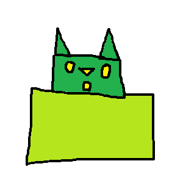
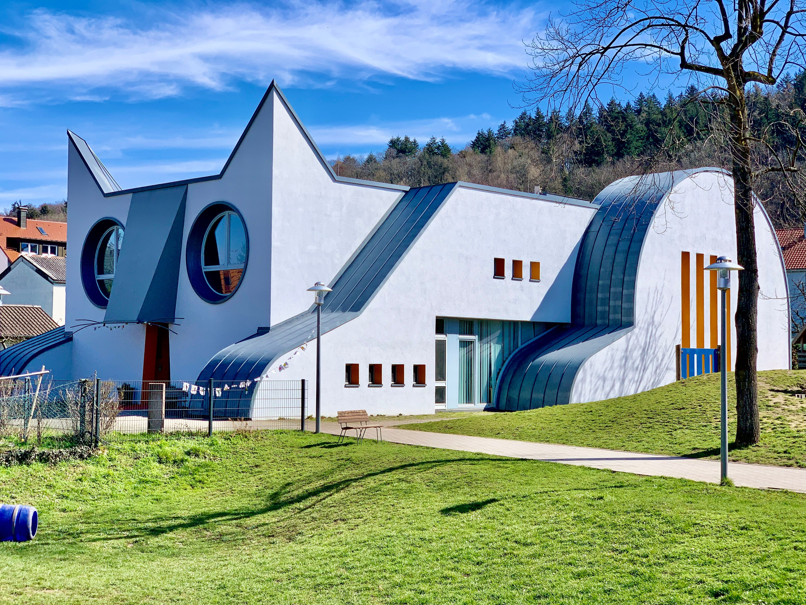

Lehel on kasutatud map area käsud
palun kliki hiirega erineva alale pildil

Kassi suu(Aken)
Aken on hoone seina, katusesse või sõidukisse tehtud ava, mis on täidetud valgust läbilaskva materjaliga. (tavaliselt klaasiga)

Tagasi kodulehele